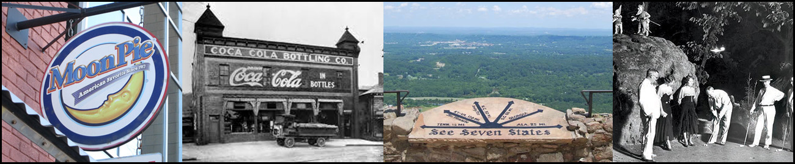

Fun Facts About Chattanooga
When you’re planning a move to Chattanooga or even if you’ve lived here a while, it’s good to know a little about the city. You probably already know that it’s a great place located in southeastern Tennessee. You may not know that it’s Tennessee’s fourth largest city or that it’s full of fascinating history. Get to know more about our town with these ten fun facts about Chattanooga, Tennessee.
Commerce
First Coca-Coca Bottling Company
While Atlanta is considered the home of Coca-Cola, since it was invented there, Chattanooga is home to the world’s first Coca-Cola Bottling company. Two lawyers bought the bottling rights in 1899 from Coca-Cola owner Asa Candler for $1. Benjamin Thomas and Joseph Whitehead then opened the first bottling company at 17 Market Street, the current location of Patten Parkway.
MoonPies
Chattanooga was the birthplace of the tasty snack cake, the MoonPie . A coal miner asked a Chattanooga Bakery traveling salesman for a snack “as big as the moon” in 1917 and the MoonPie was soon born. They were perfect for coal miners because they were filling, only cost five cents, and fit in a lunch pail. The home of the MoonPie is on Manufacturers Road and, over 100 years later, is still producing the snack cake.
World’s Fastest Internet
Fast internet service is highly desirable but not always available. Chattanooga was actually the first city in the world to bring gig internet speeds to its customers. The Electric Power Board (EPB) in Chattanooga offers speeds of 1Gbps, which is incredibly fast as compared to the average US download speed of 25.86Mbps. EPB has invested heavily in infrastructure and as a result everyone is able to benefit from the increased internet speeds provided by fiber optics connections.
Birthplace of Tow Trucks
Tow trucks were first created in Chattanooga in the 1910s. A garage worker named Ernest Holmes Sr. was inspired to create the wrecker + lifting jib after he needed the help of six men to pull a car from a creek.
Entertainment
Chattanooga Choo Choo
No list of fun facts about Chattanooga would be complete without the story of the Glen Miller Orchestra and its song, “The Chattanooga Choo Choo.” It won the first gold record awarded by the music industry and became the number one song across the US on December 7, 1941. Selling more than one million copies, the song remained at number one for nine weeks on the Billboard Best Sellers charts.
First Miniature Golf
The first patented miniature golf course was created in 1927 by Rock City Gardens founder Garnet Carter. Tom Thumb Golf on Lookout Mountain was originally intended to attract traffic to Carter’s hotel.
Famous Natives and Residents
Chattanooga is home or was the birthplace of a long list of now-famous people:
- Blues singer Bessie Smith
- R&B singer Usher
- Country singer Kane Brown
- Actor Samuel Jackson
- Actor Leslie Jordan
- Actress Lori Petty
- NFL player Reggie White
- NFL player Peyton Manning
Lookout Mountain Views
Lookout Mountain stands along the Tennessee state line, on the southernmost end of the Cumberland Plateau. From the top of the mountain, at 2,389 ft, on a clear day, visitors can see seven states: Georgia, Alabama, South Carolina, North Carolina, Kentucky, Virginia, and, of course, Tennessee.